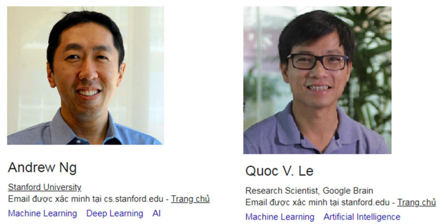

The overview of machine learning
Intro
In the time recently, Machine learning archievements now can apply into the real problems.
With some coding-framework as Tensorflow, Pytorch, Keras,Caffe2,etc. Alot people can learn and build
machine learning model and get job related to machine learning for living. So many concepts in machine learning field
now reminded from every where. On the papers, on the media, on the websites. This will lead to the misunderstanding of them.
In my humble opinion, i just want to share with you the point of view about machine learning.
To get a fully understanding in any concept, theory,... you have to refer from many source, officially or out of line.
That is my way to learn anything and also many people.
Bellow is the picture of tools, framework and platforms support you implement the theory of machine learning
into code, into experiments. almost of them is for free except the hardware part, "real things real money" as they said :)
Big picture

Above is the big picture of artificial intelligence and the inner concepts. So you can see machine learning is only a subset inside. In machine learning, there are ANN stand for artificial neural network, DNN stand for deep neural network (also know as Deep learning). Some body think that deep learning is more difficult and some how, that is a higher-level of artificial intelligence or machine learning. That because they just see some short briefs or some papers from the internet write or talk about it and getting the misconception of them. That is not true to say deep learning is more difficult than machine learning. Deep learning is inherited from ANN and expand it into a more complex or bigger architecture. Even now, the reliable way to test or trying DNN model is experiment with dataset and GPU-intergated computer. They can validate the performance of DNN model via some calculation as learning curve, the accuracy, the error,etc.
Machine learning
There are 3 big branches of machine learning. They are identified by the way of learning. But in any kind of them, you have to define some math theory, and try to optimize the result by it. Repeat the updating and measuring until getting the satisfied result.
Supervised learning
In supervised learning, you build a model include many params (the weights and bias),we use this model to predict new income data. Then measure the error by and loss function. So our purpose is adjust the params inside the model to minimize the error. How it do it? by the techniques called backpropagation and gradient descent. 2 problems can be solve by this theory is regression and classification. We need label or ground-truth value to apply supervised learning.
Unsupervised learning
Unsupervised learning does not need ground-truth data.we can create new information by the given data.
The famous unsupervised learning technique is K-means but there are still exist the other. K-means is applied in many
field as image color-reduction, or finding the centroid of the group of data.
The other application of unsupervised learning is dimensionality reduction of data. You know, in the real world,
and example about n-th dimension is a humble excel or csv data. That is not an abstact concept. So the
target of dimension reduction is reduce or decide which field of the data is useful. And convert the higher-dim data into
lower one.
Reinforcement learning
Reinforcement learning base on reward and punish mechanism. Actually they just give the score for the response of model. You can define a action by a math function with random values parameter then use this function to getting points. More point gained meaning the action is more better. Many experiments in this field can be implemented in a virtual environment as game. A lot of uncertances will apear in the real world can effect to your calculation. But robotics field can apply reinforcement learning for many kind of adapted-application.
The kinds of data
There are 4 kinds of information in real world can be use for machine learning, any kind of information can be convert to tensor (In mathematics, a tensor is an algebraic object that describes a multilinear relationship between sets of algebraic objects related to a vector space.) can be apply machine learning.
- Image: Example as image or video. The main point is use the number from 0-255 of pixel-form as (BGR) or (BGRA) or Grayscale.
- Audio: Sound or wave are define as a series of value, this is also a form of tensor and can be calcuate.
- Text: The big problem of text is the real-world language, many region use many different form of character. We did developed some techique to convert test to string (the popular one is alphabet characters) called word-embedding. These kinds of technique convert text into multi-dim vector for calculation.
- Structured data: Example as excel row. a row with n column in csv stand for a n-dims tensors. We can convert text into given range, or number or boolean. This kind of information is really familiar with data science or data analyst and used really often in fintech.
Deep learning
Deep learning (also known as deep structured learning) is part of a broader family of machine learning
methods based on artificial neural networks with representation learning.
Learning can be supervised, semi-supervised or unsupervised. Above is the image show you how a neural network
become deeper and more powerful. From the beginning, in 1944 W.Pitts and W.McCulloch suggested simple neural net with adjustable weights.
To 2014, VGG16 is a convolutional neural network model proposed by K. Simonyan and A. Zisserman from the University of Oxford in the paper
“Very Deep Convolutional Networks for Large-Scale Image Recognition”. The model achieves 92.7% top-5 test accuracy in ImageNet,
which is a dataset of over 14 million images belonging to 1000 classes.
Base on the evolution of architecture, the dataset also become bigger and bigger. From some MB now it become over more than 100GB (
this is the public datasets, and maybe even bigger which behind the scene one). And the hardware also improve to
adapte with these requirements. The support techniques example as relu function, normalization, vectorization,etc.
to avoid overfiting, underfiting, speed up training gives the breakthrough to let us moving forward.
Timeline
This is the timeline from 1940-2010, Now is 2022, the world did get the bigger achievements (you can update
the timeline from 2010 to now here). But i would love to
share with you this timeline. If you are the beginner, you can try to start with sovling the problems from 1940 to 2010
with the present tools and so many references, you can handle a problem in one day, not one year. But you know the
glory always for the first.
The timeline of machine learning did happen with a little bit dramatic.
From 1940 to 2010, we did go through the gloden age and the dark age. XOR-problem (a classification problem)
of M.Minsky and S.Papert can not be solve by perceptrons until 1986,Hinton and his team discover the multi-layered perceptron and backpropagation.
From that time, a complex neural network model with more nodes and more params is the best solution and if we can not
solve the problem with this neural network model, we need an other more complexity. Until V.Vapnik went to USA and joined the Adaptive Systems Research Department at AT&T Bell Labs.
He is the co-inventor of the support-vector machine method and support-vector clustering algorithm. With SVM (Support vector machine)
developed with the other point of view. Alot of problems can be solve with neural network can be sovle by SVM too. They say "In this article, we studied the advantages of ANNs against SVMs, and vice versa.
We tested the two models against three datasets that we used as benchmarks. In doing so, we learned that, in support of the theoretical expectations, training time for neural networks is significantly slower than training time for SVMs.
We also noted that prediction time for neural networks is generally faster than that of SVMs.", you can view the detail on this page. In 2010 DNN
(Deep neural network) is exploded.
Now you and me can learn about machine learning, can do some and may have a job for living because a lot of organizations
community from over the world are willing to share and collaborate.

Asia heroes
A lot of asian did contribute for ML community. I can nominate 2 of them for you, that is Andrew.Ng and Quoc Le. Both of them are born in the small country in Asia. But there are also have the other brillant people as Fei-fei li, Huyen Chip,etc. So i can say to you let moving forward!
References
[1] Understanding Artificial Neural Networks
[2] Andrew Ng Google scholar
[3] Quoc Le Google scholar
[4] Machine learning - wikipedia
[5] Tensorflow-tutorial
[6] Tensor-Wikipedia
[7] Deep learning-Wikipedia
[8] imagenet
[9] VGG16 – Convolutional Network for Classification and Detection
[10] Timeline of machine learning
[11] XOR problem with neural networks: An explanation for beginners
[12] Vladimir Vapnik -Wikipedia
[13] Fei-Fei Li -Wikipedia